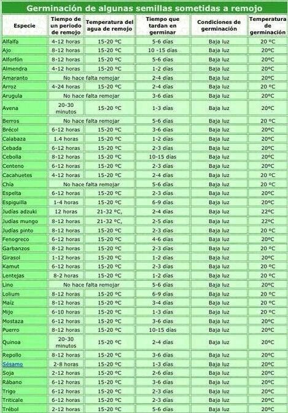

CALENDARIOS DE SIEMBRA, TRASPLANTE Y COSECHA PARA EL HEMISFERIO SUR
En este calendario se reúne información de fechas de siembra, trasplante y cosecha con la manera de planificar bien las tareas y aprovechar de la manera más eficiente las fechas de los lugares con clima templado, donde pueden darse especies de climas fríos y tropicales. No tener en cuentas las fechas puede llevar a un rotundo fracaso.
